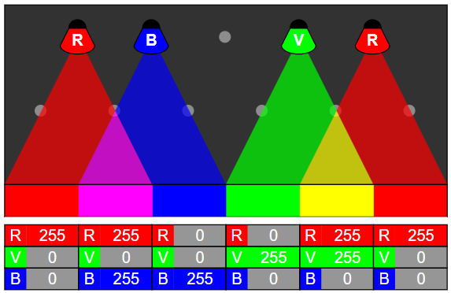
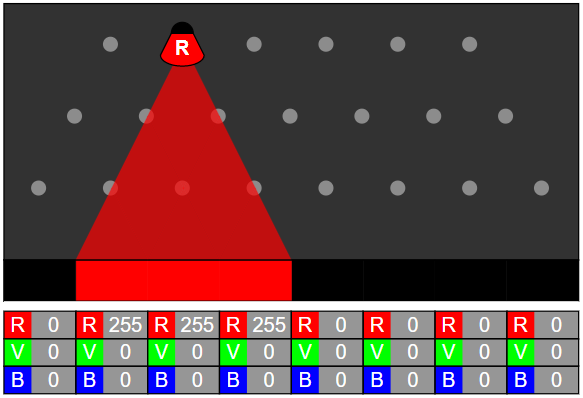
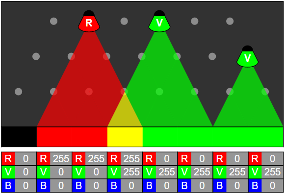
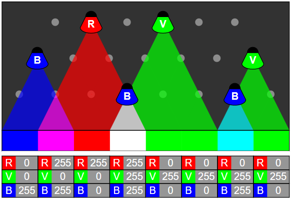
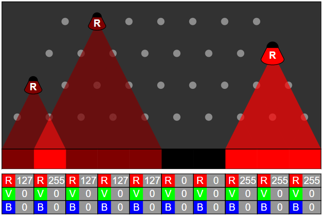
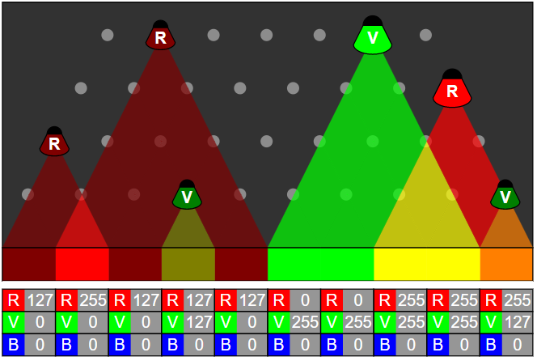
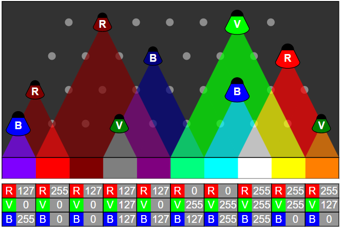

يرغب القندس في إضاءة الغرفة بالألوان الموجودة في شريط "الإضاءة المطلوبة"، قم بسحب المصابيح الملونة نحو النقاط الرمادية لإضاءة المكان أسفل المصباح
الأرقام المكتوبة في الجداول الملونة لمساعدتك.
وضعنا لك مصباحين لمساعدتك.
للحصول على الدرجة الكاملة استخدم مصابيح فقط.
إليك الحل:
يمكننا أستخدام اللون تلو الأخر، في كل مرة سنضع المصباح في أعلي مستوي ممكن، وذلك لاستخدام أقل عدد ممكن من المصابيح. لنبدأ باللون الأحمر.
ثم نضيف اللون الأخضر.
ودعونا ننتهي باللون الأزرق.
يمكننا أستخدام اللون تلو الأخر، في كل مرة سنضع المصباح في أعلي مستوي ممكن، وذلك لاستخدام أقل عدد ممكن من المصابيح. لنبدأ باللون الأحمر.
ثم دعنا نضيف اللون الأخضر.
ودعونا ننتهي باللون الأزرق.
في علوم الكمبيوتر، تكون الألوان في معظم الأحيان ممثلة باستخدام 3 أرقام المدرجة في 0 و 255. الأول يصف شدة اللون الأحمر، والثاني شدة الأخضر، والثالث شدة اللون الأزرق. تؤدي إضافة مصادر الضوء لهذه الألوان الثلاثة إلى إنتاج المزيد.
إذا ألقيت نظرة فاحصة على جهاز كمبيوتر ملون أو هاتف و شاشة تلفزيون ، فسترى أن كل بكسل يتكون فعليًا من هذه الألوان الثلاثة:
تستخدم عين الإنسان نفسها ثلاثة أنواع من المخاريط مستقبلة للضوء لرؤية الألوان ، حساسة لنطاقات مختلفة من الأطوال الموجية الخفيفة. تم اختيار الألوان الأحمر والأخضر والأزرق للشاشات لتتكيف معها وتمثيل جزء كبير من الألوان التي يمكننا إدراكها.
لتمثيل عدد يتراوح بين 0 و 255 ، يجب عليك تشفير 256 احتمالًا ، أي "2 power 8". يتم حساب أجهزة الكمبيوتر من خلال ثنائي ، أي باستخدام فقط الأرقام 0 و 1 . لتمثيل رقم بين 0 (ضمني) و "2 قوة 8" (مستبعد) ، نحتاج إلى 8 بت. نظرًا لأن الأمر يستغرق 8 بتات لوصف شدة اللون الأحمر و 8 للأخضر و 8 للأزرق ، فيستغرق الأمر ما مجموعه 24 بتة لتمثيل اللون.
نتحدث في علوم الكمبيوتر عن صورة 24 بت لوصف الدقة التي يتم بها تمثيل ألوان الصورة. أحيانًا نسمع أيضًا قل بـ 16 مليون لون ، لأن 256 * 256 * 256 تساوي 16777216 ، أو ما يزيد قليلاً عن 16 مليون.